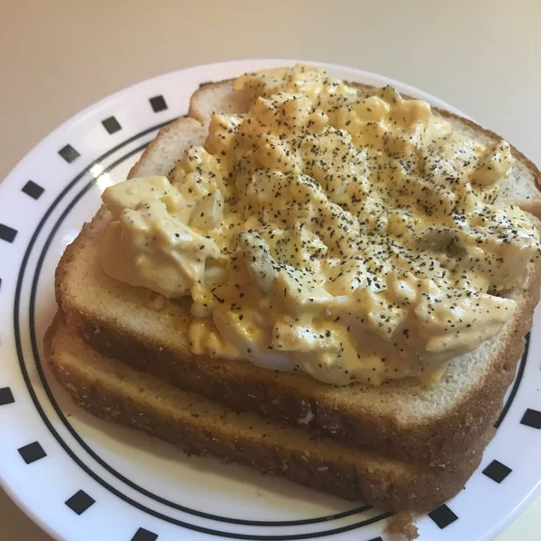

Egg Salad

Description
Because eggs are high protien, low cost. And delicious
Ingredients:
- 8 eggs
- ½ cup mayonnaise
- 1 teaspoon prepared yellow mustard
- ¼ cup chopped green onion
- ¼ teaspoon paprika
- salt and pepper to taste
Steps:
- Place egg in a saucepan and cover with cold water. Bring water to a boil and immediately remove from heat. Cover and let eggs stand in hot water for 10 to 12 minutes. Remove from hot water, cool, peel and chop.
- Place the chopped eggs in a bowl, and stir in the mayonnaise, mustard and green onion. Season with salt, pepper and paprika. Stir and serve on your favorite bread or crackers.